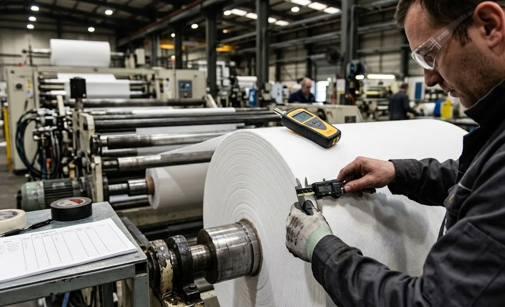

Published October 1, 2026 | By HDPTH Technical Editorial Team
Plants that skip a structured SAT pay for it twice: once in production losses while commissioning problems surface one by one during real orders, and again in a commercial argument with no evidence trail, because nobody recorded what was tested, when, and against which criterion. SAT is the counterpart to the factory acceptance test — a different instrument. FAT, run in the supplier’s factory, answers “does the machine meet the specification as built?”. SAT, run in your plant after installation, answers “does this machine, on this floor, with this power, this material and these operators, deliver the contracted performance?”.
FAT versus SAT: dividing the scope without gaps
The most common mistake is either duplicating everything — wasting supplier days on re-tests nobody needs — or leaving gaps where an item belongs to neither test and quietly disappears. A clean division:
- FAT scope: design and build verification, full functional testing including safety functions, speed and performance demonstration on representative material, and documentation review. Items covered in our FAT checklist and, for remote scenarios, the remote and virtual FAT guide.
- SAT scope: installation verification against drawings and the site preparation checklist, safety re-verification after transport and rigging, performance testing on production material at production speed, sustained-run reliability, and upstream/downstream line integration behaviour.
Write both protocols at contract stage — test items, criteria, instruments and durations — and reference the performance guarantees, so SAT is the proving ground for numbers already promised, not a fresh negotiation under time pressure.
Preparing for SAT: the readiness split
SAT readiness is a shared checklist with named owners and dates. The buyer’s side typically includes: finished floor and foundations within flatness tolerance, electrical supply of the agreed quality, compressed air, exhaust and dust-extraction connections, ambient conditions within the machine’s range, unloading access coordinated with the installation plan, and — critically — production material of the agreed specification, enough for several full runs. The supplier’s side includes installation supervision, calibrated test instruments, commissioning staff, updated documentation and spare commissioning parts. Every waiting day has a cost; the contract should say who carries it when a prerequisite is missing.
| SAT phase | Typical test items | Acceptance evidence |
|---|---|---|
| 1 — Installation & safety | Level and alignment, anchor points, electrical connections, guard interlocks, emergency stops | Completed checklist, photos, stop-function measurements |
| 2 — Functional | Drives and movements, web threading, knife positioning, tension zones, alarms and interlocks | Signed functional test sheet per item |
| 3 — Performance | Contract speed on production material, web breaks per shift, splice reliability, roll samples, changeover time | Test-run records against guarantee figures |
| 4 — Sustained run | Six to eight hours continuous production, operator-driven, including changeovers | Run log: output, defects, stops, remarks |
| 5 — Documentation & training | Manuals, drawings, spare-parts lists, software backups, training, calibration certificates | Handover checklist signed by both parties |
Executing the production-material runs
The heart of SAT is phases three and four: production material, your operators on the controls, criteria drawn from the performance guarantee. Sample rolls at agreed intervals and measure them exactly as the FAT measured its rolls — width, hardness, edge quality, winding appearance. Let your operators drive significant parts of the run: the machine must be usable by the people who will run it after the supplier flies home, and their feedback feeds the training plan. Record everything in the run log — output, defects, stop reasons — because it becomes the baseline for the post-commissioning ramp-up.

Deviation management and closing SAT
No complex machine passes every item first time; what separates a professional SAT from an argument is deviation discipline. Log every failed or unproven item with the criterion, agreed corrective action, owner and retest date. Classify each deviation as blocking (performance-critical) or punch-list (cosmetic, documentation, adjustments) — punch-list items can be accepted with a dated closure commitment, blocking items cannot. SAT closes with a signed report listing accepted results, the open punch list and retest outcomes. Release the final payment milestone only then, recording the warranty start point and documentation handover in the same signature block, so warranty, payment and documents move together.
Planning acceptance for an upcoming machine?
HDPTH supplies structured FAT and SAT protocols with defined criteria, sustained-run test plans and complete handover documentation. Send us your material and performance requirements and we will quote the machine with acceptance milestones included.
Submit Your Project InquiryQuestions to put to every vendor
- Will you provide draft FAT and SAT protocols before contract signature, with test items, criteria and durations we can negotiate?
- Exactly which site prerequisites do you require from us, and who carries the cost if one is not ready?
- How many retests of failed SAT items are included, and how are blocking deviations separated from punch-list items?
- Is final payment contractually tied to a signed SAT report, and does the warranty start at SAT completion?
Frequently asked questions
What is the difference between FAT and SAT for a slitter rewinder?
The factory acceptance test proves the machine works as designed under the supplier’s controlled conditions — calibrated instruments, demonstration material and full technical support on hand. The site acceptance test proves the machine works in your reality: your foundation, your power supply, your operators, your material at production speed over a sustained period. Scope should not be duplicated: FAT covers design verification, safety functions and full functional testing, while SAT verifies installation quality, performance under production conditions and line integration. Sign both protocols at contract stage, with test items, criteria and durations defined.
Who is responsible for SAT readiness — buyer or supplier?
Readiness is split. The buyer is responsible for site prerequisites: finished floor and foundations, electrical supply of the agreed quality, compressed air, exhaust or dust extraction connections, environmental conditions, unloading access, and stocked production material at the agreed specification. The supplier is responsible for installation supervision or execution, calibrated test instruments, test execution support and commissioning documentation. Write the prerequisite list into the contract — most SAT disputes trace back to a missing prerequisite that neither party formally owned, and every waiting day has a cost someone must carry.
How long should a slitter rewinder SAT last?
A single slitter rewinder typically needs three to five working days after installation is complete: one day for installation checks and safety verification, one to two days of functional and performance testing, and one to two days of sustained production-material running to demonstrate speed, changeover, roll quality and reliability. Complex lines with upstream integration can take one to two weeks. Avoid compressing the sustained run — intermittent issues such as web breaks at speed and rewind quality drift only appear over continuous production, which is exactly what SAT exists to reveal.
What happens if the machine fails a SAT test item?
A failed item becomes a logged deviation in the SAT report with three attributes: the failed criterion, the agreed corrective action with an owner, and a deadline for retest. Minor deviations — cosmetic issues, documentation gaps, non-critical adjustments — can be accepted with a punch list and closed before final payment. Performance-critical failures such as missing speed, unstable tension or repeated web breaks block acceptance and trigger supplier corrective work on site. The contract should state how many retests are included and that final payment milestones are tied to signed SAT completion.
Which documents must the supplier deliver at SAT completion?
The handover package should include: the signed SAT report with all test records; as-built electrical, pneumatic and mechanical drawings; final manuals including maintenance schedules and spare-parts lists with part numbers; calibration records for installed instruments; the completed safety verification; software backups with version records; and training records for your operators and maintenance staff. Collect these before releasing the final payment — after the commissioning engineers leave, retrieving missing documents becomes slow and expensive.
Sources
- IEC 60204-1: Electrical equipment of machines — verification and stop-function testing relevant to SAT electrical checks
- EU Machinery Regulation (EU) 2023/1230: instructions, information-for-use and safety verification duties after installation
- ISO 55001: Asset management — placing machine acceptance records in a life-cycle asset framework
- ISO 9001 (2015 edition page): quality management principles for acceptance testing and documented evidence